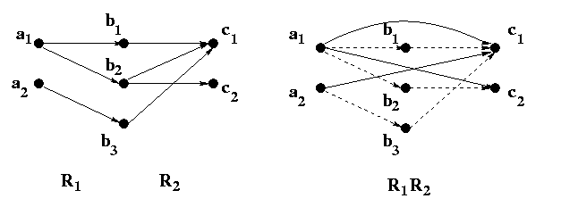
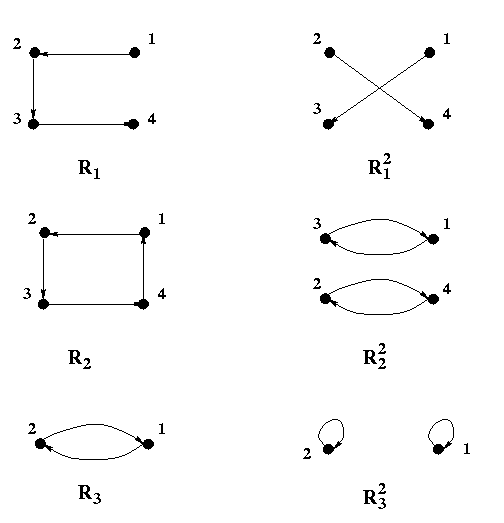

A relation is a set. It is a set of ordered pairs if it is a binary relation, and it is a set of ordered n-tuples if it is an n-ary relation. Thus all the set operations apply to relations such as
Relation
Set Operations
A relation is a set. It is a set of ordered pairs if it is a binary relation,
and it is a set of ordered n-tuples if it is an n-ary relation.
Thus all the set operations apply to relations such as
 ,
,
 ,
and complementing.
,
and complementing.
For example, the union of the "less than" and "equality" relations on the set of
integers is the "less than or equal to" relation on the set of integers.
The intersection of
the "less than" and "less than or equal to" relations on the set of integers is
the "less than" relation on the same set. The complement of the "less than"
relation on the set of integers is the "greater than or equal to" relation on the
same set.
Composite Relations
If the elements of a set A are related to those of a set B, and those of
B
are in turn related to the elements of a set C, then one can expect a relation
between A and C. For example, if Tom is my father(parent-child relation)
and Sarah is a sister of Tom (sister relation),
then Sarah is my aunt (aunt-nephew/niece relation). Composite relations give that kind of relations.
Definition(composite relation):
Let R1 be a binary relation from a set A to a set B,
R2 a binary
relation from B to a set C. Then the composite
relation from A
to C denoted by
R1R2(also denoted by
R1
R2 is defined as
R1R2 =
{<a, c> |
a
 A
A
 c
c
 C
C
 b [b
b [b
 B
B
 <a, b>
<a, b>
 R1
R1
 <b, c>
<b, c>
 R2 ] } .
R2 ] } .
In English, this means that an element a in A is related to an element c in C if there is an element b in B such that a is related to b by R1 and b is related to c by R2 . Thus R1R2 is a relation from A to C via B in a sense. If R1 is a parent-child relation and R2 is a sister relation, then R1R2 is an aunt-nephew/niece relation.
Example 1: Let A = {a1 , a2} , B = {b1 , b2 , b3} , and C = {c1 , c2} . Also let R1 = {<a1 , b1> , <a1 , b2> , <a2 , b3> } , and R2 = {<b1 , c1> , <b2 , c1> , <b2 , c2> , <b3 , c1> } . Then R1R2 = {<a1 , c1> , <a1 , c2> , <a2 , c1> } .
This is illustrated in the following figure. The dashed lines in the figure of R1R2
indicate the ordered pairs in R1R2, and dotted lines show ordered
pairs that produce the dashed lines. (The lines in the left figure are all supposed to be solid lines.)

Example 2: If R is the parent-child relation on a set of people A,
then RR, also denoted by R2, is the grandparent-grandchild relation on A.
More examples:
The digraphs of R2 for several simple relations R are shown below:

Properties of Composite Relations
Composite relations defined above have the following properties. Let R1 be a relation from A to B, and R2 and R3 be relations from B to C. Then
1. R1(R2R3) = (R1R2)R3
2. R1(R2
 R3) =
R1R2
R3) =
R1R2
 R1R3
R1R3
3. R1(R2
 R3)
R3)
 R1R2
R1R2
 R1R3
R1R3
Proofs for these properties are omitted.
Powers of Relation
Let R be a binary relation on A. Then Rn for all positive integers n is defined recursively as follows: